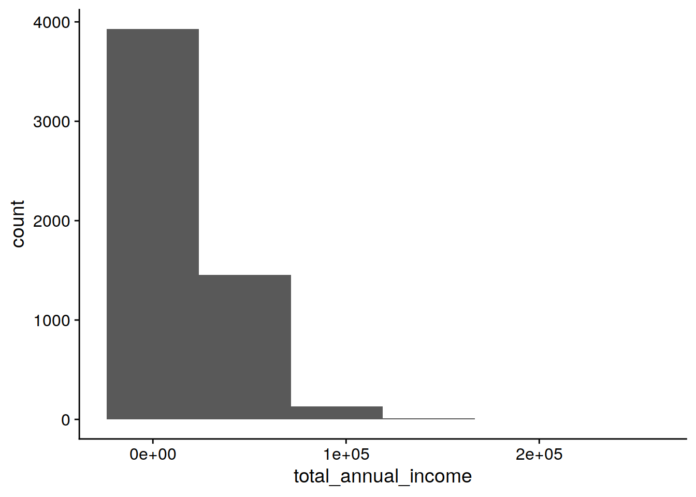

Code
library(tidyverse)
library(cowplot)
Attaching package: 'cowplot'The following object is masked from 'package:lubridate':
stampImport packages
library(tidyverse)
library(cowplot)
Attaching package: 'cowplot'The following object is masked from 'package:lubridate':
stampRead in the cleaned study data
readRDS('../data/processed/data_clean.RDS') %>% as_tibble() -> data_cleandata_clean %>% glimpse()Rows: 23,522
Columns: 12
$ id <fct> 194, 194, 194, 194, 194, 19052, 27495, 27…
$ study_year <int> 2015, 2016, 2017, 2018, 2019, 2015, 2016,…
$ sex <fct> female, female, female, female, female, f…
$ age <int> 59, 60, 61, 62, 63, 74, 35, 37, 38, 85, 7…
$ persons_in_household <int> 2, 2, 2, 2, 2, 2, 3, 3, 3, 2, 1, 1, 4, 4,…
$ children_in_household <int> 0, 0, 0, 0, 0, 0, 1, 1, 1, 0, 0, 0, 2, 2,…
$ number_of_years_of_education <dbl> 10.5, 10.5, 10.5, 10.5, 10.5, 10.0, 15.0,…
$ employment_status <fct> part_time, part_time, part_time, part_tim…
$ number_income_sources <int> 1, 1, 1, 1, 1, 2, 1, 1, 1, 2, 2, 2, 1, 1,…
$ total_annual_income <dbl> 28678.943, 19962.293, 22227.676, 22100.37…
$ general_health_status <int> 4, 3, 3, 5, 4, 2, 2, 3, 2, 3, 4, NA, 3, 3…
$ life_satisfaction <int> 6, 5, 7, 5, 6, 8, 8, 8, 8, 8, 5, 8, 8, 7,…data_clean %>% summarise(across(everything(), ~ sum(is.na(.)))) %>%
pivot_longer(cols = everything(),
names_to = "variable",
values_to = "n_missing") %>%
mutate(percent_missing = round(n_missing * 100 / nrow(data_clean),1))# A tibble: 12 × 3
variable n_missing percent_missing
<chr> <int> <dbl>
1 id 0 0
2 study_year 0 0
3 sex 0 0
4 age 0 0
5 persons_in_household 77 0.3
6 children_in_household 77 0.3
7 number_of_years_of_education 1611 6.8
8 employment_status 2 0
9 number_income_sources 0 0
10 total_annual_income 0 0
11 general_health_status 102 0.4
12 life_satisfaction 611 2.6data_clean$study_year %>%
hist(main='study_year')data_clean %>%
filter(study_year==2015) %>%
ggplot(aes(x=age)) +
geom_histogram(bins=6) +
theme_cowplot()data_clean %>%
filter(study_year==2015) %>%
ggplot(aes(x=persons_in_household)) +
geom_histogram(bins=6) +
theme_cowplot()Warning: Removed 19 rows containing non-finite outside the scale range
(`stat_bin()`).data_clean %>%
filter(study_year==2015) %>%
mutate(persons_in_household=log(persons_in_household)) %>%
ggplot(aes(x=persons_in_household)) +
geom_histogram(bins=5) +
theme_cowplot()Warning: Removed 19 rows containing non-finite outside the scale range
(`stat_bin()`).
data_clean %>%
filter(study_year==2015) %>%
ggplot(aes(x=children_in_household)) +
geom_histogram(bins=6) +
theme_cowplot()Warning: Removed 19 rows containing non-finite outside the scale range
(`stat_bin()`).data_clean %>%
filter(study_year==2015) %>%
mutate(children_in_household=(children_in_household+1)^(-1)) %>%
ggplot(aes(x=children_in_household)) +
geom_histogram(bins=8) +
theme_cowplot()Warning: Removed 19 rows containing non-finite outside the scale range
(`stat_bin()`).data_clean %>%
filter(study_year==2015) %>%
ggplot(aes(x=number_of_years_of_education)) +
geom_histogram(bins=5) +
theme_cowplot()Warning: Removed 353 rows containing non-finite outside the scale range
(`stat_bin()`).data_clean %>%
filter(study_year==2015) %>%
mutate(number_of_years_of_education = log(number_of_years_of_education)) %>%
ggplot(aes(x=number_of_years_of_education)) +
geom_histogram(bins=5) +
theme_cowplot()Warning: Removed 353 rows containing non-finite outside the scale range
(`stat_bin()`).data_clean %>%
filter(study_year==2015) %>%
ggplot(aes(x=total_annual_income)) +
geom_histogram(bins=6) +
theme_cowplot()
data_clean %>%
filter(study_year==2015) %>%
mutate(total_annual_income = log(total_annual_income)) %>%
ggplot(aes(x=total_annual_income)) +
geom_histogram(bins=6) +
theme_cowplot()Warning: Removed 2170 rows containing non-finite outside the scale range
(`stat_bin()`).
data_clean %>%
filter(study_year==2015) %>%
ggplot(aes(x=general_health_status)) +
geom_histogram(bins=5) +
theme_cowplot()Warning: Removed 26 rows containing non-finite outside the scale range
(`stat_bin()`).data_clean %>%
filter(study_year==2015) %>%
ggplot(aes(x=life_satisfaction)) +
geom_histogram(bins=5) +
theme_cowplot()Warning: Removed 125 rows containing non-finite outside the scale range
(`stat_bin()`).data_clean %>%
filter(study_year==2015) %>%
mutate(life_satisfaction = log(11 - life_satisfaction)) %>%
ggplot(aes(x=life_satisfaction)) +
geom_histogram(bins=5) +
theme_cowplot()Warning: Removed 125 rows containing non-finite outside the scale range
(`stat_bin()`).